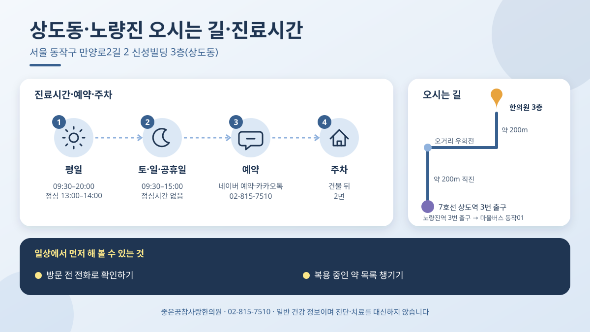
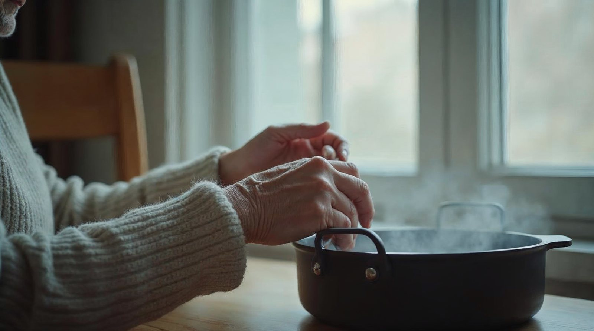
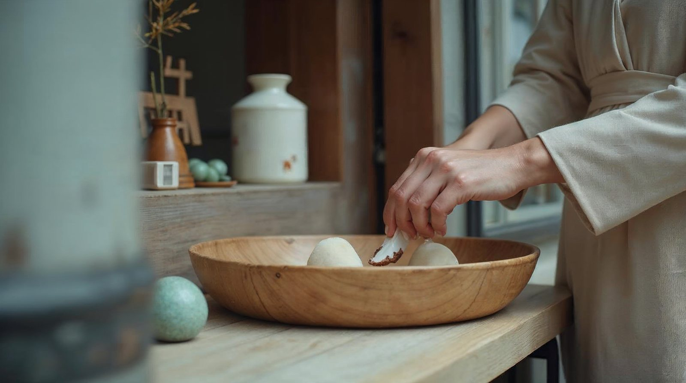
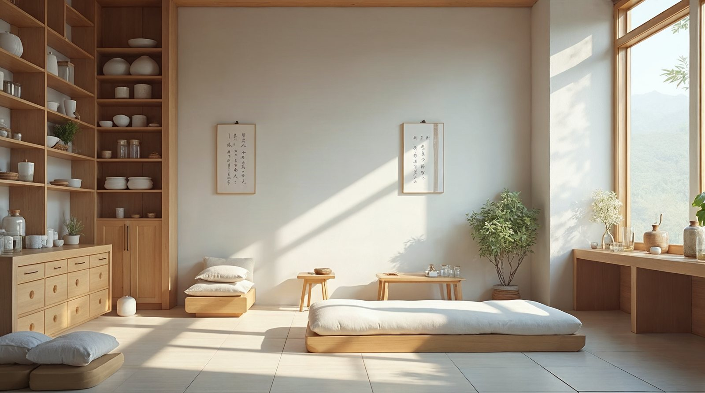

좋은꿈참사랑한의원은 서울 동작구 상도동 만양로2길 2 신성빌딩 3층·5층에 있는 한의원입니다. 7호선 상도역 3번 출구에서 약 200m 거리이며, 평일은 오전 9시 30분부터 오후 8시까지, 토·일·공휴일은 오후 3시까지 진료합니다.

한의원 기본 정보
진료시간은 공개 안내 기준이며 방문 전 확인을 권합니다.
- 주소: 서울 동작구 만양로2길 2 신성빌딩 3층·5층 (상도동)
- 전화: 02-815-7510
- 진료시간: 평일 09:30~20:00(점심 13:00~14:00), 토·일·공휴일 09:30~15:00
- 예약: 네이버 예약, 카카오톡 상담, 전화
- 진료과목: 한방내과, 한방부인과, 한방소아과, 한방안·이비인후·피부과, 한방신경정신과, 침구과, 한방재활의학과, 사상체질과
상도역에서 오시는 길
7호선 상도역 3번 출구에서 약 200m 앞 오거리까지 직진한 뒤, 상도노빌리티 상가를 오른쪽에 끼고 우회전해 약 200m 올라오시면 됩니다. 신동아리버파크 후문이 있는 작은 사거리에서 우측 도로 쪽 첫 번째 건물입니다.
노량진역·장승배기에서 오시는 길
지하철 1·9호선 노량진역 3번 출구에서 약 100m 직진하면 KEB하나은행 앞에 마을버스 정류장이 있습니다. 동작01번 마을버스를 타고 신동아리버파크 정류장에서 내리면 건너편 3층입니다. 배차 간격은 평일 약 5분, 주말 약 7분입니다.
7호선 장승배기역에서는 상도역까지 한 정거장 이동한 뒤 3번 출구로 나오시면 됩니다.
주차 안내
건물 옆 뒤쪽 주차 공간 2면을 이용하실 수 있고, 옆 하늘빛교회(구 노량진감리교회) 지하주차장도 이용 가능합니다. 자리가 없을 수 있어 대중교통 이용을 함께 권합니다.
의료진과 이력
좋은꿈참사랑한의원은 좋은꿈 네트워크의 한의원이며, 2013년 상도동에서 개원했다고 소개합니다.
- 이종호 대표원장: 원광대학교 한의과대학 졸업. 동작구 어르신 치매예방, 찾아가는 실버한방케어, 한의약 난임치료 지원사업 지정 한의사로 프로필에 소개(해마다 달라질 수 있어 확인 필요)
- 조영기 수석진료원장: 한의학박사, 진료 분야 추나요법·통증재활
- 정원영 진료원장
동네 생활과 함께 살피는 것
노량진에서 시험을 준비하며 오래 앉아 있는 분, 상도동 언덕길과 계단을 매일 오르내리는 분, 장승배기와 상도동에서 일과 육아를 함께 하는 분처럼 생활의 모양은 저마다 다릅니다. 진료실에서는 이런 하루의 모습을 일상의 말로 여쭙고, 몸따삶잘(몸의 온기·소화·잠·대소변·통증과 생활)을 함께 살핍니다.
처음 오시는 분께
처음 오시면 접수, 상담, 진찰, 치료, 귀가 전 안내 순서로 진행합니다. 다시 오시면 지난번 이야기부터 이어서 여쭙습니다.
- 복용 중인 약 목록과 건강검진 결과지 챙기기
- 불편한 점을 언제, 어떤 상황에서 느끼는지 적어 오기
- 진료시간을 방문 전에 확인하기
이 홈페이지가 지키는 것
이 홈페이지는 다른 의료기관과 비교하는 표현을 쓰지 않고, 위치·진료시간·진료과목·의료진 이력처럼 확인할 수 있는 사실만 안내합니다. 한방가이드의 글은 일반 건강 정보이며 진단과 치료를 대신하지 않습니다.
상도동·노량진에서
상도동, 노량진, 장승배기는 모두 동작구에 있어 지하철 7호선과 1·9호선, 마을버스로 오갈 수 있습니다. 평일은 오후 8시까지, 토·일·공휴일은 오후 3시까지 진료하니 출퇴근과 등하교 동선에 맞춰 예약해 주세요.
자주 묻는 질문
상도역에서 한의원까지 어떻게 가나요?
7호선 상도역 3번 출구에서 약 200m 직진한 뒤 우회전해 약 200m 올라오시면 됩니다. 신동아리버파크 후문 근처 작은 사거리의 우측 첫 번째 건물입니다.
노량진역에서는 어떻게 가나요?
노량진역(1·9호선) 3번 출구에서 약 100m 앞 정류장에서 마을버스 동작01번을 타고 신동아리버파크 정류장에서 내리시면 건너편 3층입니다.
주차할 곳이 있나요?
건물 옆 뒤쪽 주차 공간 2면이 있고, 옆 하늘빛교회 지하주차장도 이용 가능합니다.
주말과 공휴일에도 진료하나요?
토요일·일요일·공휴일은 오전 9시 30분부터 오후 3시까지 진료합니다. 방문 전 진료 여부를 확인해 주세요.
평일 저녁 몇 시까지 진료하나요?
평일은 오후 8시까지 진료하며 점심시간은 오후 1시부터 2시까지입니다. 늦은 시간에는 미리 예약하시길 권합니다.
어떤 진료과목이 있나요?
한방내과, 한방부인과, 한방소아과, 한방안·이비인후·피부과, 한방신경정신과, 침구과, 한방재활의학과, 사상체질과 진료과목이 있습니다.
동작구 어르신 한방 사업도 하나요?
이종호 대표원장은 프로필에 동작구 어르신 치매예방 사업, 찾아가는 실버한방케어 지정 한의사로 소개되어 있습니다. 사업은 해마다 달라질 수 있어 동작구보건소와 한의원에 확인해 주세요.
예약은 어떻게 하나요?
네이버 예약, 카카오톡 상담, 전화(02-815-7510)로 하실 수 있습니다.
좋은꿈 네트워크는 무엇인가요?
좋은꿈참사랑한의원이 속한 한의원 네트워크입니다. 지점마다 운영하는 클리닉과 진료시간이 다르니 해당 지점에 직접 확인해 주세요.
감수: 좋은꿈참사랑한의원 대표원장 이종호 · 마지막 확인 2026-11-26 · 일반적인 건강 정보이며 진단·치료를 대신하지 않습니다.
동작구·상도동 안내 글 모아 보기 (25편)

숭실대·중앙대 학생이 시험 기간에 목·어깨가 굳고 잠까지 무너질 때, 상도동 한의원에서는 무엇부터 살피나요?
시험 기간 목·어깨 뻐근함과 무너진 잠은 따로 오기보다 함께 오는 경우가 많습니다. 저는 맥부터 짚고 잠·끼니·카페인·마음까지 하루의 리듬을 함께 여쭙니다. 심한 두통·팔 저림·가슴 통증은 먼저 확인을 받으세요.
수정 2026-11-25

퇴근길에 한의원에 들르려면 평일 저녁 몇 시까지 가면 되나요? — 직장인이 저녁 진료를 이어 가는 법
좋은꿈참사랑한의원은 평일 저녁 8시까지 진료합니다. 접수 마감과 진료에 걸리는 시간은 날마다 다를 수 있어, 퇴근 뒤 오실 때는 방문 전에 전화(02-815-7510)로 확인하시고 예약을 잡아 두시기를 권합니다.
수정 2026-11-25

일요일이나 공휴일에 몸이 불편할 때, 상도역 근처에서 한의원 진료를 받을 수 있나요?
상도역 좋은꿈참사랑한의원은 토·일·공휴일에도 09:30~15:00 진료하며 이 시간에는 점심시간이 없습니다. 명절 운영과 진료 마감 무렵 방문은 전화로 먼저 확인해 주시고, 응급 신호가 있으면 가까운 응급실로 가세요.
수정 2026-11-25

무릎이나 허리가 불편한데 상도역에서 한의원까지 걸어오려면 어떻게 오면 좋을까요?
7호선 상도역 3번 출구에서 약 200m 직진한 뒤 오거리에서 우회전해 약 200m 올라오면 한의원 건물이 있어, 무릎이나 허리가 불편하신 분은 오르막에서 서두르지 말고 쉬어 오시고, 노량진역에서는 마을버스 동작01을 이용하실 수 있습니다.
수정 2026-11-24

연세 드신 부모님을 모시고 처음 한의원에 갈 때는 무엇을 챙기면 좋을까요?
어르신의 첫 진료에는 복용 중인 약 목록과 최근 검사 결과, 평소 불편한 점을 보호자가 함께 정리해 오시면 이야기를 나누는 데 도움이 되고, 진료 시간과 주차 공간 2면을 미리 전화로 확인하시면 편합니다.
수정 2026-11-24

부모님과 아이까지 가족이 함께 진료받으러 갈 때는 무엇을 준비하면 좋을까요?
가족이 함께 진료받을 때는 한 분씩 가장 불편한 점과 복용 중인 약을 메모해 오시고, 평일 저녁 8시·주말과 공휴일 오후 3시까지인 진료 시간과 예약, 주차 공간 2면을 미리 전화로 확인하시면 한 분 한 분 이야기를 나누기 수월합니다.
수정 2026-11-24

노량진에서 혼자 지내는 수험생이 아플 때를 대비해 미리 알아 둘 것은?
노량진에서 혼자 지내는 수험생은 가까운 응급실 위치와 지인 연락처, 체온계와 기본 상비 물품, 복용 약 메모, 근처 병원·약국·한의원 진료 시간을 미리 정리해 두면 갑자기 아플 때 덜 당황합니다.
수정 2026-11-24
새벽 시장처럼 찬물과 무거운 상자를 다루는 일을 할 때 손목과 허리는 어떻게 챙기나요?
새벽부터 찬물과 얼음, 무거운 상자를 다루는 일은 손목과 손가락이 시리고 저리며 허리에 부담이 쌓이기 쉽습니다. 일하는 시각과 상자 무게, 장갑과 잠의 리듬을 먼저 여쭙고 일터에서 할 수 있는 방법을 함께 찾습니다.
수정 2026-11-24

노량진 학원 수업 사이 짧은 시간에 한의원 진료를 받으려면 무엇을 준비하나요?
수업 사이 짧은 시간에 진료를 받으려면 네이버 예약이나 전화로 시간을 먼저 정하고, 불편한 곳과 시작된 날, 복용 약을 메모해 오시면 상담이 빨라집니다. 노량진역 3번 출구 쪽에서 마을버스로 오실 수 있습니다.
수정 2026-11-24

혼자 사는데 밤에 몸이 아프면 무엇부터 판단해야 하나요?
혼자 사는 분이 밤에 몸이 아플 때는 가슴 통증, 숨 가쁨, 마비, 갑작스러운 심한 두통 같은 응급 신호가 있으면 바로 응급실로 가세요. 응급 신호가 없다면 증상을 기록해 두었다가 다음 날 진료 시간에 맞춰 상담하는 순서로 판단합니다.
수정 2026-11-24

장승배기·대방·신대방·흑석 쪽에서 상도동 좋은꿈참사랑한의원까지는 어떻게 오나요?
좋은꿈참사랑한의원은 서울 동작구 만양로2길 2 신성빌딩 3층·5층(상도동)에 있으며, 7호선을 타시면 상도역 3번 출구로, 1·9호선을 타시면 노량진역 3번 출구로 나와 오실 수 있습니다. 건물 주차 공간이 2면이라 차로 오실 때는 미리 전화로 확인해 주세요.
수정 2026-11-24

난방비가 걱정돼 집을 서늘하게 지내는 어르신은 겨울에 몸을 어떻게 챙기나요?
난방을 아끼느라 집이 서늘하면 몸이 움츠러들고 관절이 시리며 입맛과 잠도 흔들리기 쉽습니다. 자주 머무는 방 한 곳을 따뜻하게 하고 내복과 실내 양말, 따뜻한 식사를 챙기며 저체온 신호를 미리 알아 두세요.
수정 2026-11-24
상도동 근처에서 걷기 습관을 만들고 싶을 때는 어떻게 시작하나요?
걷기 습관은 처음부터 길게 걷기보다 식후 10분처럼 짧게 자주 걷는 것부터 시작해야 오래가며, 동네 공원과 산책길을 활용하되 무릎·허리 불편이나 숨 가쁨이 있으면 먼저 확인합니다.
수정 2026-11-24

상도동과 노량진에서 한의원 이용에 대한 자주 묻는 질문
좋은꿈참사랑한의원은 서울 동작구 상도동 만양로2길 2 신성빌딩 3층·5층에 있고 7호선 상도역 3번 출구에서 걸어서 올 수 있으며, 평일 저녁 8시와 토·일·공휴일 오후 3시까지 진료하고 네이버 예약과 전화, 카카오톡으로 문의할 수 있습니다.
수정 2026-11-24

상도동 언덕길과 계단을 매일 오르내릴 때 무릎은 어떻게 챙기나요?
상도동처럼 언덕과 계단이 많은 동네에서는 내려가는 길에 무릎 부담이 커질 수 있어, 걷는 길과 신발, 불편한 순간을 먼저 묻고 생활 속에서 무릎을 아끼는 방법을 함께 찾습니다.
수정 2026-11-24
노량진에서 시험을 준비하는 수험생은 몸을 어떻게 챙기나요?
노량진 학원가에서 오래 앉아 공부하는 수험생은 목·어깨 뻐근함, 소화 불편, 잠의 리듬이 흔들리기 쉬워, 하루 공부 시간과 식사, 잠을 먼저 묻고 시험까지 버틸 수 있는 생활 리듬을 함께 정리합니다.
수정 2026-11-24

명절이나 연휴가 다가올 때는 한의원 방문 전에 무엇을 확인하면 되나요?
명절과 연휴에는 진료 여부와 시간이 평소와 달라질 수 있어 방문 전에 전화로 확인하고, 복용 중인 약과 연휴 중 이동 일정을 미리 정리해 상담하는 것이 좋습니다.
수정 2026-11-25
이종호 대표원장의 약력과 소개된 진료 분야는 무엇인가요?
이종호 대표원장은 원광대학교 한의과대학을 졸업하고 2013년 상도동에 좋은꿈참사랑한의원을 개원했으며, 뇌기능 재활과 당뇨·대사증후군·다이어트를 진료 분야로 소개하고 동작구 여러 지역 사업의 지정 한의사로 참여한 이력이 프로필 카드에 기재되어 있습니다.
수정 2026-11-24

조영기 수석진료원장의 약력과 소개된 진료 분야는 무엇인가요?
조영기 수석진료원장은 추나요법과 통증재활을 진료 분야로 소개하며, 원광대학교 한의과대학원 석사·박사와 한방병원 통증재활과·신경내과 진료원장 등의 이력이 프로필 카드에 기재되어 있습니다.
수정 2026-11-25

동작구 겨울 아침, 찬 공기 속 출근길에 무엇을 챙기면 좋을까요?
겨울 아침 찬 공기는 목과 어깨를 움츠리게 하고 코와 목을 건조하게 할 수 있어, 출근길 옷차림과 실내외 온도 차, 아침 식사를 먼저 묻고 출근길에 몸을 지키는 방법을 함께 찾습니다.
수정 2026-11-24

동작구 어르신 한방 사업(치매예방·찾아가는 실버한방케어)은 어떻게 확인하나요?
동작구 어르신 한방 관련 지역 사업은 대상과 신청 방법이 해마다 달라져 동작구청과 보건소 안내를 먼저 확인해야 하며, 이종호 대표원장은 치매예방과 찾아가는 실버한방케어 상도동 지정 한의사로 소개되어 있습니다.
수정 2026-11-24
동작구 한의약 난임치료 지원사업은 어떻게 알아보나요?
난임으로 고민하는 부부는 동작구에서 한의약 난임치료 지원사업이 운영되는지 구청과 보건소에 먼저 확인하고 대상 요건과 신청 서류를 준비하면 되며, 이종호 대표원장은 이 사업의 지정 한의사로 소개되어 있습니다.
수정 2026-11-24
좋은꿈참사랑한의원 진료 공간은 어떻게 생겼나요?
좋은꿈참사랑한의원은 상도동 신성빌딩 3층·5층에 있으며 상담실과 커튼으로 나뉜 치료 침대, 추나 테이블, 초음파와 치료 장비, 약재를 다루는 약제실이 있고 실제 사진은 진료 공간 둘러보기와 원내 탕전 기록에서 볼 수 있습니다.
수정 2026-11-24

좋은꿈참사랑한의원의 진료과목은 무엇이고 각각 무엇을 살피나요?
좋은꿈참사랑한의원은 한방내과, 한방부인과, 한방소아과, 한방안·이비인후·피부과, 한방신경정신과, 침구과, 한방재활의학과, 사상체질과를 진료과목으로 안내하며 증상과 상태에 따라 필요한 진료를 함께 정합니다.
수정 2026-11-24

상도동·노량진 근처 한의원을 방문하기 전에 무엇을 확인하면 좋을까요?
한의원을 방문하기 전에는 의료진 소개, 진료과목, 진료 시간과 예약 방법, 오시는 길과 주차, 비용 설명, 복용 약 확인 여부를 살펴보면 좋으며 좋은꿈참사랑한의원의 안내를 함께 정리했습니다.
수정 2026-11-24